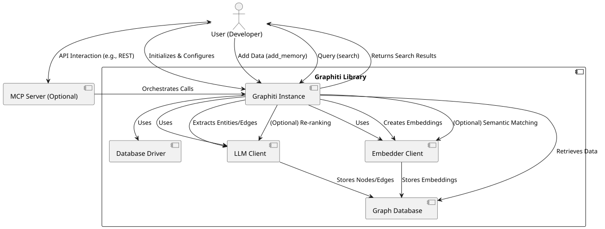
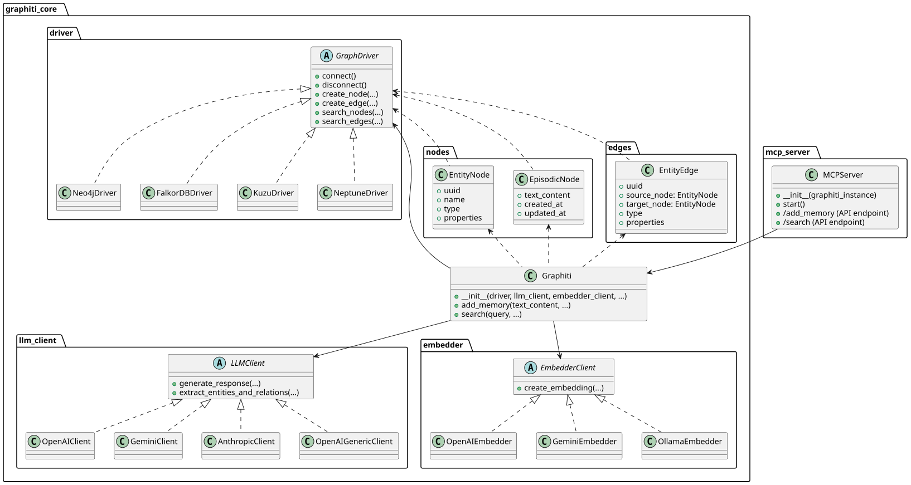

Graphiti is a Python framework designed for building and querying dynamic, temporally-aware knowledge graphs. It allows AI agents to continuously integrate new information, reason about changing facts, and maintain historical context, going beyond the capabilities of static Retrieval-Augmented Generation (RAG) tools. This documentation provides a comprehensive overview of both its functional features and technical architecture.
Graphiti provides the following core capabilities and features:
Graphiti's primary function is to enable the creation, management, and querying of knowledge graphs. Users interact with the system through a streamlined API to achieve these goals.

add_memory)Users provide unstructured text or structured JSON data to Graphiti. The system then automatically extracts entities and relationships, generates vector embeddings, and stores this information in the chosen graph database, maintaining temporal context.
from graphiti_core import Graphiti
# ... (driver, llm_client, embedder_client setup) ...
graphiti_instance = Graphiti(driver=my_driver, llm_client=my_llm, embedder_client=my_embedder)
text_data = "John Doe was the CEO of Example Corp from 2020 to 2023. He then became the Chairperson."
graphiti_instance.add_memory(text_content=text_data, group_id="example_org")
search)Graphiti supports sophisticated querying mechanisms to retrieve relevant facts and entities from the knowledge graph. This includes hybrid search combining multiple techniques for high relevance.
results = graphiti_instance.search(query="Who is the current leader of Example Corp?", group_id="example_org")
for result in results:
print(f"Fact: {result.type} between {result.source_node.name} and {result.target_node.name}")
Graphiti is designed with extensibility in mind, allowing users to plug in their preferred components for various tasks:
For microservice architectures, the MCP Server provides an API layer over the Graphiti library, allowing other applications to interact with the knowledge graph via HTTP/REST endpoints without direct library integration.
# Example of an API call to MCP Server (conceptual)
# POST /add_memory
# { "text_content": "...", "group_id": "..." }
# GET /search
# { "query": "...", "group_id": "..." }
The Graphiti codebase is structured to be modular and extensible, centered around the graphiti_core library and optionally augmented by the mcp_server.

The main components of the Graphiti architecture are:
graphiti_core PackageThis is the heart of the Graphiti system, containing the core logic for graph creation, manipulation, and querying.
Graphiti Class (graphiti_core/graphiti.py):
The central orchestrator. Users instantiate this class to interact with the graph. It coordinates operations between the database driver, LLM client, and embedder client. Key methods include add_memory for ingestion and search for retrieval.
graphiti_core/driver/):
An abstract base class (GraphDriver) defines the interface for database interactions. Concrete implementations exist for various graph databases (e.g., Neo4jDriver, FalkorDBDriver, KuzuDriver, NeptuneDriver). These drivers handle the low-level persistence and retrieval of nodes and edges.
class GraphDriver(ABC):
@abstractmethod
def connect(self):
pass
# ... other abstract methods for node/edge operations
graphiti_core/llm_client/):
An abstract base class (LLMClient) provides a unified interface for interacting with Large Language Models. Implementations like OpenAIClient, GeminiClient, and AnthropicClient are used for tasks such as entity and relationship extraction from raw text, and potentially re-ranking search results.
class LLMClient(ABC):
@abstractmethod
async def generate_response(self, messages, response_model, **kwargs):
pass
# ... other abstract methods
graphiti_core/embedder/):
An abstract base class (EmbedderClient) defines how vector embeddings are created from text. Implementations such as OpenAIEmbedder, GeminiEmbedder, and OllamaEmbedder are used to convert text into numerical representations for semantic search and similarity calculations.
class EmbedderClient(ABC):
@abstractmethod
async def create(self, texts: list[str]) -> list[list[float]]:
pass
graphiti_core/nodes.py, graphiti_core/edges.py):
These modules define the fundamental data structures representing information in the graph:
EpisodicNode: Represents a unit of ingested raw data (e.g., a document or conversation turn).EntityNode: Represents an entity extracted from the raw data (e.g., a person, organization, concept) with its properties.EntityEdge: Represents a relationship or "fact" between two EntityNodes (e.g., "John DOE -WAS_CEO_OF-> Example Corp"). It includes source, target, type, and properties.mcp_server Package (Multi-Client Provider Server)The mcp_server acts as an optional microservice layer built on top of graphiti_core. It exposes Graphiti's functionalities via a web API (e.g., FastAPI), allowing other services or applications to interact with the knowledge graph without directly embedding the Graphiti library.
Its primary role is to:
Graphiti instance.